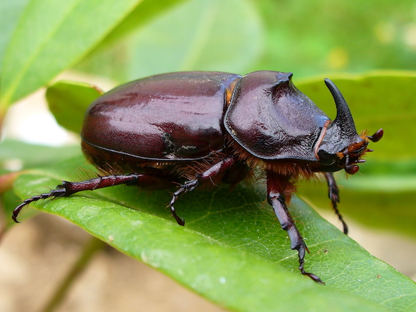

INSECT HOUSE
The Insect House is home to one of the largest and most diverse insect collections in the world. Here you will see creepy crawlies from all over the world, in every shape and size. From giant rhinoceros beetles to beautiful butterflies, glowing scorpions and leaf-cutting ants working together.
Our displays are designed to teach you about how important insects are for our planet. You will learn how bees pollinate our food, how beetles recycle waste, and why even spiders are our friends. The glass enclosures let you see them up close safely, and our guides will tell you amazing facts you never knew.
It is a favourite for kids who love bugs and for anyone who wants to overcome their fear of insects in a safe and educational environment.
WHERE WILL YOU FIND IT
The Insect House is at the eastern side of the zoo, next to the monkey trail.